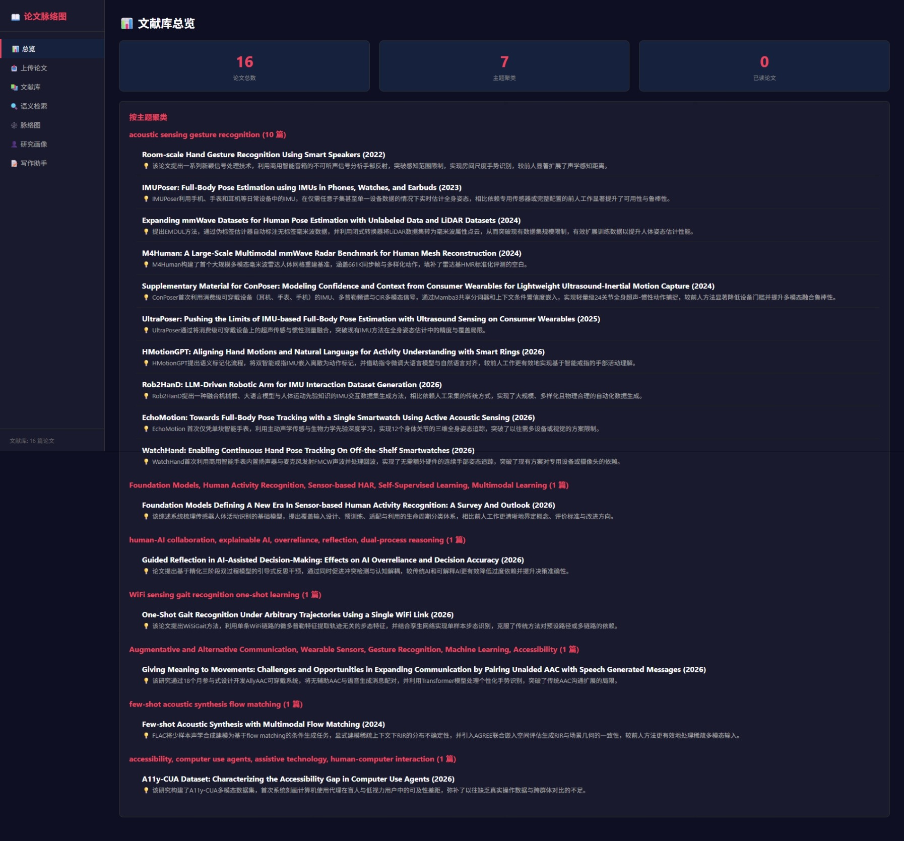
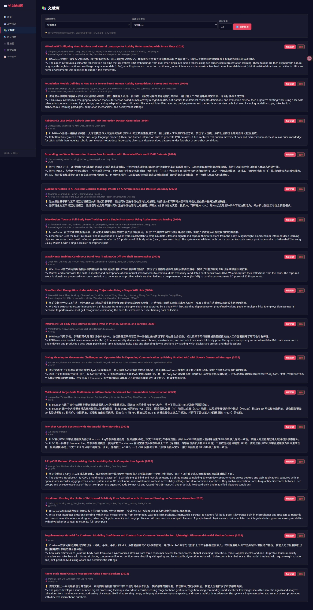
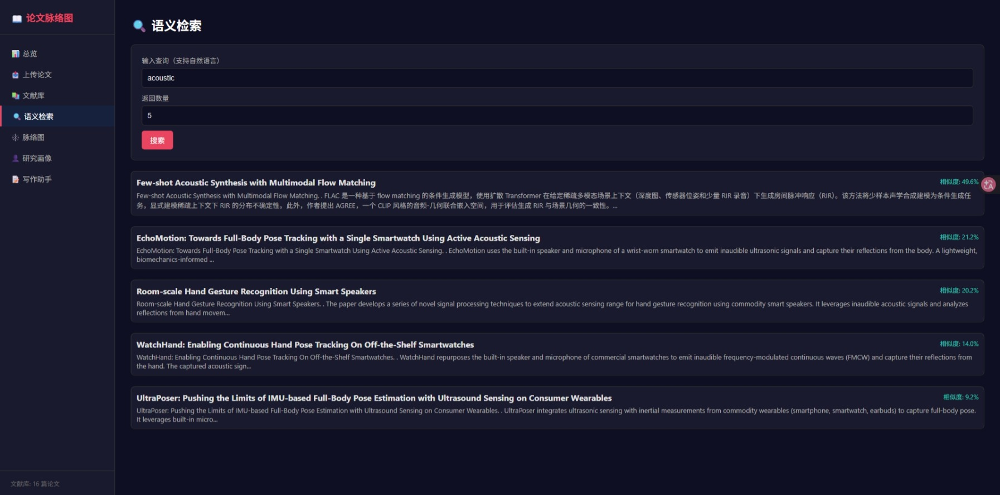
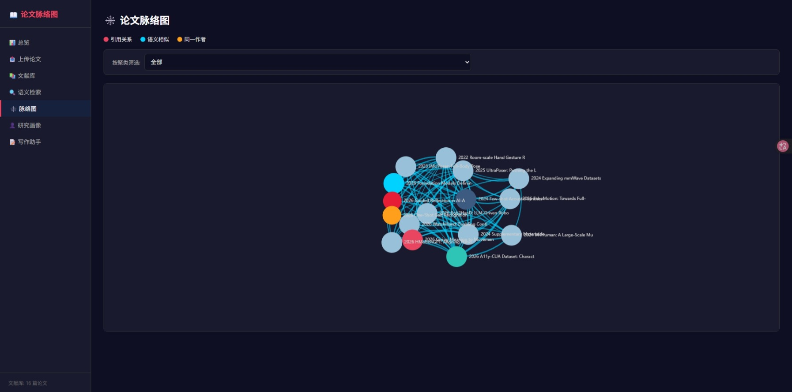
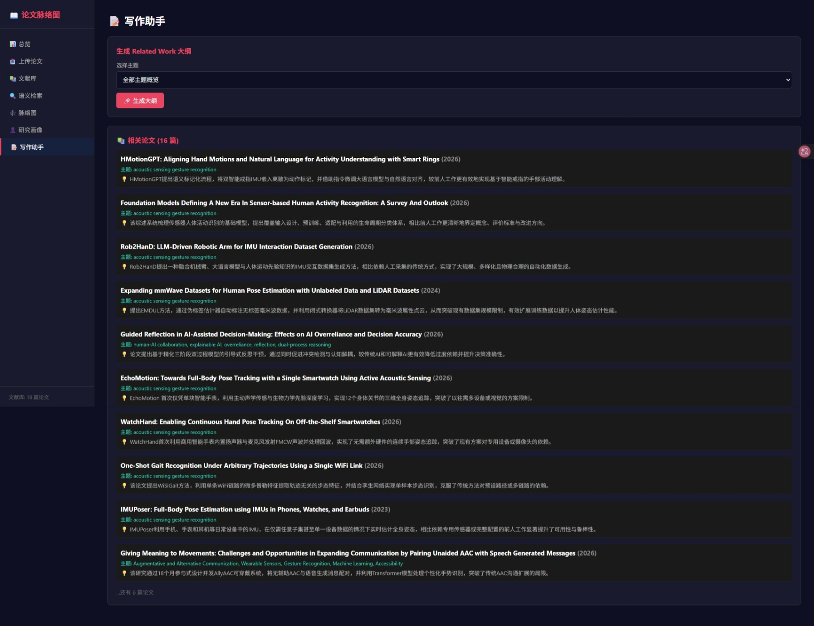

基于 PowerContext 框架的文献综述智能助手
自动提取论文信息 · 构建引用关系图 · 发现语义关联 · 辅助 Related Work 写作
论文脉络图是一个个人文献管理工具，深度集成 PowerContext 框架， 帮助研究人员自动提取论文信息、构建引用关系图、发现语义关联，辅助 Related Work 写作。 系统支持批量 PDF 上传、智能解析、自动去重、语义检索、主题聚类和可视化脉络图等功能。
支持一次选择多个 PDF，自动解析并提取标题、摘要、方法、结论、参考文献等结构化信息，自动去重避免重复入库。
基于 TF-IDF 或 OpenAI Embedding 的论文语义搜索，支持自然语言查询，返回最相关的论文及相似度评分。
交互式 ECharts 图谱，展示引用关系（红色）、语义相似（蓝色）、同一作者（橙色）三种关系类型，支持拖拽和缩放。
基于论文向量相似度自动聚类，使用并查集算法，支持调整相似度阈值（0.3=粗聚类，0.7=细聚类）。
按主题聚类生成 Related Work 大纲，每篇论文一句话贡献总结，支持选择特定主题深入生成或全部主题概览。
记录研究方向和关注关键词，新论文自动关联已有文献，标记与用户研究相关的论文。
本项目深度集成 PowerContext 框架，充分利用其 Artifact 系统、SQLite 持久化、FTS5 全文搜索和 sqlite-vec 向量索引能力。
┌─────────────────────────────────────────────────────────────┐
│ 用户界面 (Flask + HTML) │
└──────────────────────┬──────────────────────────────────────┘
│
┌──────────────────────▼──────────────────────────────────────┐
│ SyncPaperStore (同步包装器) │
│ 桥接 Flask 同步路由与 PowerContext 异步 API │
└──────────────────────┬──────────────────────────────────────┘
│
┌──────────────────────▼──────────────────────────────────────┐
│ PaperStore (异步持久化层) │
│ 使用 PowerContext SQLite Profile 管理数据库连接 │
└──────┬───────────────┬───────────────┬──────────────────────┘
│ │ │
┌──────▼──────┐ ┌──────▼──────┐ ┌──────▼──────┐
│ FTS5 全文 │ │ sqlite-vec │ │ SQLAlchemy │
│ 搜索索引 │ │ 向量索引 │ │ 数据模型 │
└─────────────┘ └─────────────┘ └─────────────┘
论文建模为不可变 Artifact，支持版本追踪和血缘管理，符合学术文献引用规范。
使用 PowerContext 的 SQLite Profile，自动处理连接池、事务、WAL 日志。
论文标题、摘要、方法的全文检索，支持中文分词和高效查询。
本地向量索引，无需外部向量数据库，支持语义相似度检索。
RRF 融合算法结合 BM25 和向量搜索，提升检索质量。
共享词汇表的 TF-IDF 向量化，无需额外模型即可实现语义聚类。

展示论文总数、主题聚类数量、已读论文统计，按主题分组显示所有论文及贡献摘要。

支持按聚类筛选、按相关性筛选、自动重新聚类。每篇论文显示完整信息：标题、作者、年份、贡献、方法等。

输入自然语言查询（如"acoustic"），系统返回最相关的论文及相似度评分，支持调整返回数量。

交互式 ECharts 图谱，展示引用关系（红色）、语义相似（蓝色）、同一作者（橙色），支持按聚类筛选。

选择主题后生成 Related Work 大纲，包含论文贡献速览，支持全部主题概览或特定主题深入生成。
# 1. 克隆仓库
git clone https://github.com/jiangcolor/powercontext.git
cd powercontext/qoder
# 2. 创建虚拟环境（推荐）
python -m venv venv
venv\Scripts\activate
# 3. 安装 PowerContext
pip install -e ..
pip install "powercontext[builtin] @ file:///C:/Users/ouyan/Desktop/oceanbase/powercontext"
# 4. 安装其他依赖
pip install -r requirements.txt
# 5. 配置 API Key（可选）
copy .env.example .env
# 编辑 .env 填入 OPENAI_API_KEY
# 6. 启动应用
python app.py
浏览器打开 http://localhost:5000 即可使用。
充分利用 Artifact 系统、SQLite Profile、FTS5、sqlite-vec 等基础设施，避免重复造轮子。
使用 PowerContext 的异步 SQLite Profile，通过 SyncPaperStore 桥接 Flask 同步路由，兼顾性能与开发效率。
结合 BM25 全文搜索和向量语义搜索，使用 RRF 融合排序，提升检索准确性和召回率。
从总览到文献库，从脉络图到写作助手，信息层次清晰，支持用户按需深入探索。
Qoder UID
01a177b6-8819-704d-9812-f3caf0e363c3